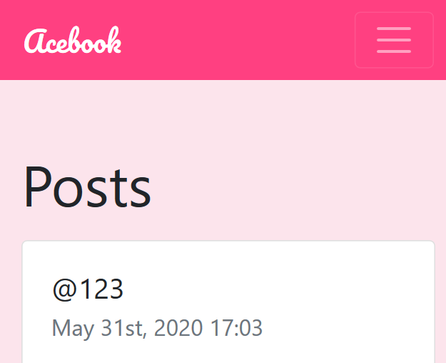

Welcome to my Portfolio
I am a software engineer based in London.
Please feel free to check out my GitHub account.
Projects
-
Projects
A portfolio site based on user stories from FreeCodeCamp, displaying some examples of my work. Plain HTML5 and CSS3. Deployed to GitHub Pages.
-
Triathlon Events
A triathlon events aggregation site. JS stack, React frontend and Node.js backend. Raw data requested from third party API in backend, simple parser implemented to serve up JSON to frontend.
-
Food for Thought

A recipe generator based on ingredients input. JS stack using React and Node.js. TravisCI for continuous integration, deployed to Heroku. Group project in team of 5, from ideation to delivery in 1 week.
-
Acebook
A social media site where users can share their thoughts. Ruby on Rails application with PostgreSQL. TravisCI for continuous integration, deployed to Heroku. 5 day group project.